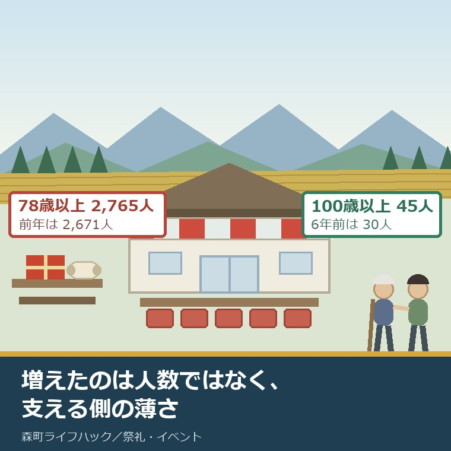
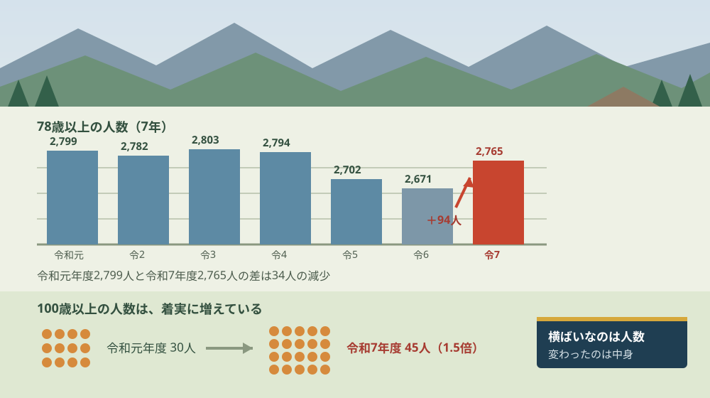
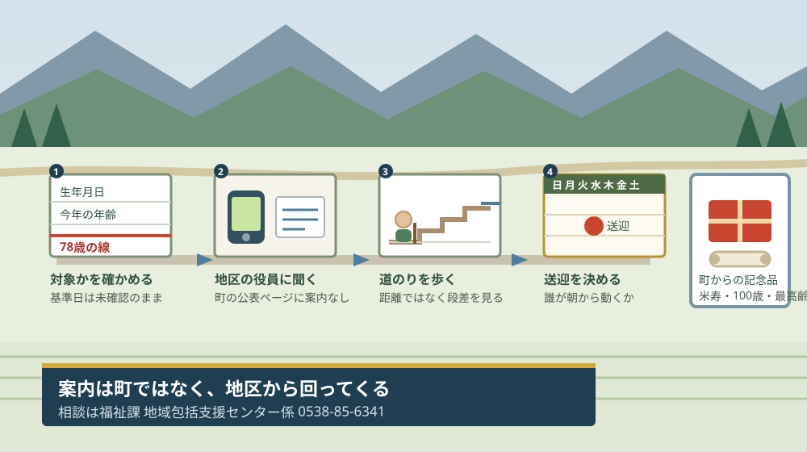

森町の敬老会は78歳以上2,765人｜1年で94人増

この記事の要点
Q. 森町の敬老会って、何歳からで、何人くらいいるんですか。
A. 対象は78歳以上、2025年度は2,765人です。前年度の2,671人より94人増えました。ただし令和元年度は2,799人で、7年間で見れば横ばいです。はっきり増えているのは100歳以上で、30人から45人になりました。敬老会は町内各地区で開かれます。
静岡県周智郡森町（遠州森町）で秋に開かれる行事のうち、外から見えにくいものの一つが敬老会です。祭りと違って写真も出回らず、地区の集会所で静かに行われます。
私は磐田市で小さな不動産業を営みながら、森町の空き家・農地・実家じまいのご相談を受けています。親御さんの家をどうするかという相談は、たいてい「そろそろ地区の役が回ってこなくなった」という話から始まります。敬老会の対象になるかどうかは、その手前にある線です。
今日は2026年8月29日です。この記事では、森町の敬老会の対象者数を7年分並べて、増えているのか減っているのかを数字で確かめます。
先にお断りします。ここに載せる人数は、森町の広報紙と町長の同報無線の原稿から私が書き写したものです。割合や増減率の計算は私がやったもので、森町が公表している統計ではありません。
公式情報から確定できること
2026年8月29日時点で、森町の公表資料から確認できたことを順に並べます。出典は記事の末尾に載せています。
一つ目。森町の敬老会の対象は78歳以上です。広報もりまち2025年10月号（第826号、2025年10月15日発行）に「今年度、森町の敬老会対象となる78歳以上の方は２，７６５人です。」と記載されています。
二つ目。2025年度（令和7年度）の対象者は2,765人です。同じ記事に「このうち米寿が１４５人、１００歳が15人、最高齢者は１０８歳です。」と続きます。
三つ目。前年度の2024年度（令和6年度）は2,671人でした。広報もりまち2024年10月号に「森町の敬老会対象となる78歳以上の方は２，６７１人です。このうち米寿が１４３人、１００歳以上が41人、最高齢者は１０７歳です。」と記載されています。
四つ目。この2つの差は94人です。2,765人から2,671人を引いた数です。対象年齢はどちらの年度も78歳以上で、変わっていません。
五つ目。森町の町長は毎年、同報無線でこの数字を読み上げています。その原稿が町の公表ページに残っており、令和元年度から令和7年度までの7年分を確認できます。
六つ目。令和7年度の同報無線の原稿には、こう記されています。「今年度、78歳以上の方は2,765人で、このうち米寿の方は145人、100歳になる方は16人、100歳以上の方は全部で45人いらっしゃいます。」
七つ目。7年分の78歳以上の人数は、令和元年度2,799人、令和2年度2,782人、令和3年度2,803人、令和4年度2,794人、令和5年度2,702人、令和6年度2,671人、令和7年度2,765人です。いちばん多いのは令和3年度の2,803人、いちばん少ないのは令和6年度の2,671人です。
八つ目。100歳以上の人数は、令和元年度30人、令和2年度38人、令和3年度30人、令和4年度34人、令和5年度36人、令和6年度41人、令和7年度45人です。こちらは増え方の向きがはっきりしています。
九つ目。町内の最高長寿者は令和5年度106歳、令和6年度107歳、令和7年度108歳です。広報もりまち2025年10月号によれば、最高長寿者は市場地区の方です。
十番目。記念品は町から贈られます。令和7年度の同報無線の原稿には「最高長寿者、100歳になる方、米寿の方へは、町からの記念品をお渡しして、ご長寿をお祝いします。」とあります。広報の記事では、町長が寿詞と記念品を手渡したと報じられています。
十一番目。敬老会そのものは、町内各地区で開かれます。令和元年度の同報無線の原稿に「関係者の皆さんのご理解とご協力をいただきながら、町内各地区で敬老会が開催されます。」と記されています。町が一か所で開く行事ではありません。
十二番目。森町の高齢化率は36.3パーセントです。森町高齢者保健福祉計画・第9期介護保険事業計画には「本町の2023（令和５）年10月１日現在の総人口は17,266人、高齢化率は36.3％と、町民の３人に１人は65歳以上の高齢者で占められています。」と記載されています。65歳以上は6,267人です。
十三番目。同じ計画は「高齢化率は増加し続け、2040（令和22）年には42.7％まで上昇すると見込まれます。」と書いています。森町の人口は、住民基本台帳による2026年8月1日現在で16,422人です。
十四番目。森町の公表ページに、敬老会の開催案内は見当たりませんでした。開催日、会場、地区ごとの実施方法、祝金の有無。いずれも私が探した範囲では確認できませんでした。ここは未確認のまま残します。

この絵で描きたかったのは、棒の高さがほとんど変わらないという一点です。敬老会の対象者は、増え続けているわけではありません。この7年、2,700人前後で上下しています。
もう一つ描いたのは、棒の下に並べた小さな丸です。100歳以上の人数だけは、確実に増えています。同じ「高齢化」という言葉の中に、動いていない数字と動いている数字が混ざっています。
7年分の推移を、1枚の表にする
森町の町長の同報無線の原稿から、年度ごとの数字を並べ直します。ここは公表値のままで、私の計算は「前年差」の列だけです。
| 年度 | 78歳以上 | 前年差（私の計算） | 米寿 | 100歳以上 |
|---|---|---|---|---|
| 令和元年度 | 2,799人 | — | 142人 | 30人 |
| 令和2年度 | 2,782人 | −17人 | 140人 | 38人 |
| 令和3年度 | 2,803人 | ＋21人 | 145人 | 30人 |
| 令和4年度 | 2,794人 | −9人 | 160人 | 34人 |
| 令和5年度 | 2,702人 | −92人 | 124人 | 36人 |
| 令和6年度 | 2,671人 | −31人 | 143人 | 41人 |
| 令和7年度 | 2,765人 | ＋94人 | 145人 | 45人 |
この表を作って、私はまず自分の予想が外れたことに気づきました。令和7年度の＋94人は、7年分の中でいちばん大きな増加です。そこだけ見れば、たしかに「1年で94人増えた」と言えます。
ところが、始点と終点を比べると景色が変わります。令和元年度の2,799人と、令和7年度の2,765人。6年かけて34人減っています。増加率にすると約1.2パーセントの減少です。
いちばん動いたのは令和5年度で、前年から92人減りました。令和4年度から令和6年度までの2年間で、123人減っています。令和7年度の＋94人は、その戻りの動きに見えます。
だから私はこう言い切ります。森町の敬老会は、対象者が増え続けて大変になっているのではありません。この7年、対象者はほぼ同じ人数です。変わっているのは、その2,765人を支える側の人数のほうです。
森町の総人口は、第9期の計画にある2023年10月1日現在の17,266人から、2026年8月1日現在の16,422人になりました。3年弱で844人減っています。対象者の数はほぼ同じでも、分母が減れば、1人あたりの負担は重くなります。地区ごとの人口の差は森町の地区別人口にまとめました。
100歳以上は、6年で1.5倍になっている
78歳以上の人数が横ばいなのに対して、100歳以上ははっきり増えています。ここは表の右端の列です。
令和元年度の30人が、令和7年度は45人です。差は15人、1.5倍になりました。途中で減った年（令和3年度の30人）もありますが、令和5年度からは36人、41人、45人と3年続けて増えています。
最高長寿者の年齢も同じ向きです。令和5年度106歳、令和6年度107歳、令和7年度108歳。3年で3歳上がっています。広報もりまち2025年10月号によれば、令和7年度の最高長寿者は市場地区の方です。
この45人という数を、町の人口で割ってみます。ここからは私の計算です。2025年10月1日現在の森町の人口は16,704人（広報もりまち2025年10月号「人の動き」）ですから、100歳以上は約371人に1人になります。2,765人のほうは、約6.0人に1人です。
敬老会は、誰が開いているのか
私がこの記事で一番知りたかったのは、対象者の数ではなく、その2,765人のために誰が動いているのかでした。結論から書くと、公表資料からは十分に追えませんでした。
分かったのは、実施が地区ごとだということです。令和元年度の同報無線の原稿には「町内各地区で敬老会が開催されます」とあり、令和4年度の原稿には「町内各地で敬老会や記念品の贈呈が実施されます」とあります。町が一括で開く行事ではありません。
令和2年度の原稿には、別の書き方が残っています。「新型コロナウイルス感染拡大防止の観点から、敬老会の開催は見合わせ、代わりに対象者に記念品をお渡しする地区が多いと伺っています。」「伺っています」という言い方に、町と地区の距離が出ています。
町が担っているのは、最高長寿者・100歳到達者・米寿の方への記念品です。会そのものを開くのは地区で、案内も地区から回ります。だから森町の公表ページを探しても、開催日も会場も出てきません。仕組みとしては筋が通っていますが、外から探す側には見えません。
良い点：この仕組みの、よくできているところ
森町の敬老会をめぐる情報の出し方には、評価したい点が4つあります。順に書きます。
一つ目。数字が毎年、同じ形で公表されていることです。78歳以上の人数、米寿、100歳、最高長寿者。この4項目が7年分そろっているので、住民が自分で並べて比べられます。これは当たり前のようで、なかなかありません。
二つ目。町長が同報無線で読み上げていることです。広報紙が届く前に、放送で町中に流れます。インターネットを使わない方にも同じ数字が届く経路が、いまも生きています。
三つ目。敬老会の実施を地区に任せていることです。78歳以上が2,765人いる町で、一か所に集める形にしたら、会場も送迎も成り立ちません。地区ごとなら歩いて行ける距離に収まります。
四つ目。記念品の対象を、最高長寿者・100歳到達者・米寿の3つに絞っていることです。2,765人全員に配る形にしていない。限られた予算と人手の中で、どこに絞るかを決めてある点は、私は評価します。
注文したい点：家族の側から見て足りないところ
ここからは、親御さんが対象になるご家族の立場での注文を4つ書きます。批判ではなく、外から探した側の報告です。
一つ目。敬老会の開催案内が、町の公表ページから探せないことです。実施が地区ごとであることは理解しています。ただ、「うちの地区はいつどこでやるのか」を町の外にいる子ども世代が調べる入口が、どこにもありません。
二つ目。78歳という対象年齢の基準日が書かれていないことです。年度内に78歳になる方が対象なのか、ある日付で78歳に達している方なのか。広報の記載からは読み取れませんでした。1歳の差で入るか入らないかが決まる家庭にとっては、これが最初の疑問になります。
三つ目。100歳の人数の書き方が、年によって揃っていないことです。広報もりまち2025年10月号は「１００歳が15人」、同じ年度の同報無線の原稿は「100歳になる方は16人」で、数が1人違います。さらに2024年10月号は「１００歳以上が41人」と、そもそも数える対象が違います。この3つを並べて比べると、読む側が混乱します。
四つ目。祝金の有無が、どこにも書かれていないことです。記念品の記載はありますが、金銭の給付があるのかないのかは公表ページから確認できませんでした。無いなら無いと書いてあるほうが、家族は準備ができます。

この図で二段目に電話を置いたのには理由があります。森町の公表ページには開催案内が無いので、地区に聞くしか経路がないからです。探す時間をかけるより、1本かけたほうが早い。
三段目に道のりを置いたのも同じ考え方です。78歳の方にとって、集会所までの数百メートルは距離ではなく段差の問題になります。会場が近いことと、行けることは別です。
対案・結論：今日、ご家族が確かめられること
森町の外に住んでいても、今日のうちに進められることがあります。順番に5つ書きます。役場が開いていない日でもできる内容にしました。
一つ目。親御さんの生年月日を紙に書き出して、78歳の線と比べてください。すでに超えているなら対象です。あと1年、2年なら、そのタイミングで地区の名簿に載ることになります。
二つ目。お住まいの地区の役員が誰かを、親御さんに聞いてください。組長でも、班長でも呼び方は地区によります。敬老会の案内はこの経路で来ます。名前と連絡先を1行、控えておいてください。
三つ目。集会所までの道のりを、地図ではなく段差で確かめてください。階段があるか、手すりがあるか、雨の日に滑る場所はないか。これは現地でしか分かりません。次に帰省したときの宿題にしてください。
四つ目。当日の送迎を誰がやるのかを、家族の予定表に書いてください。敬老会は平日に開かれる地区もあります。運転する人が町の外に住んでいるなら、その日の朝から動く必要があります。地区ごとの足の事情は森町の公共交通空白地域に書きました。
五つ目。親御さんが今年で米寿（88歳）や100歳になるなら、それを家族で共有してください。町から記念品が贈られる対象です。当日、誰が同席するかを決めておくと、当日になって慌てません。
ここまでやっても、今日決めることは何もありません。今日の成果は、対象かどうかと、聞く相手と、道のりの3つがはっきりしたことです。この3つがあれば、9月に案内が回ってきたときに動けます。
家族に残す記録
確かめた内容は、その日のうちに1枚にまとめてください。敬老会は毎年あるので、一度書いておくと来年そのまま使えます。
書き出す項目は6つです。①親御さんの生年月日と今年の年齢 ②対象かどうか ③地区名と役員の連絡先 ④開催日と会場 ⑤集会所までの道のりと段差 ⑥当日の送迎担当。年が変わっても同じ枠で埋められます。
加えて、確認できなかったことも同じ紙に残します。「78歳の基準日は公表資料で確認できなかった」「祝金の有無は町の公表ページに記載がない」の2つです。分からないことを書いておくと、来年その欄から確認を再開できます。
もう一つ、実家の名義と、親御さんが地区で担っている役を一行書き足してください。敬老会の対象になるということは、地区の役から外れる時期が近いということでもあります。その役を誰が引き継ぐのかは、家の名義の話と同じ時期に出てきます。介護の相談の入口は森町で介護の相談を最初にどこへするかにまとめました。
大石の視点
ここからは公表資料の話ではなく、私がどう見ているかを書きます。体験談として書ける現場の一場面は手元にないので、意見として明示します。
私がこの7年分を並べて最初に思ったのは、「増えているという話が、思っていたより正確ではなかった」ということでした。1年で94人増えたのは事実です。ただし6年前より34人少ない。どちらも同じ資料に書いてあります。
不動産の仕事をしていると、この種の数字の読み違えをよく見ます。直近1年の動きだけを見て、傾向だと思ってしまう。地価でも空き家の件数でも同じで、7年並べて初めて、上下しているだけなのか、片方向に動いているのかが分かります。
その目で見ると、森町ではっきり片方向に動いているのは100歳以上の人数です。令和元年度30人が令和7年度45人。この6年で1.5倍になりました。78歳以上の人数が横ばいなのとは、明らかに違う動き方をしています。
これが何を意味するか。私はこう考えます。敬老会に来られる方の割合が、静かに下がっているということです。対象者の総数が同じでも、その中で90代・100代の比重が増えれば、会場に足を運べる人は減ります。
だとすれば、地区が抱える負担は「人数が増えたこと」ではなく、「送迎と付き添いが要る人の割合が増えたこと」のほうに出ているはずです。同じ2,700人でも、7年前とは中身が違います。
ただ、これは私の推測です。年齢別の内訳が公表されているのは78歳以上・米寿・100歳以上の3点だけで、80代と90代の分かれ方は分かりません。出席率が公表されていないので、実際に会場に来た人が増えたのか減ったのかも確認できませんでした。断定はしません。
もう一つ、私が引っかかっているのは総人口のほうです。第9期の計画にある2023年10月1日の17,266人が、2026年8月1日には16,422人。3年弱で844人減っています。敬老会の対象者はほぼ同じ人数のまま、支える側だけが減っている形です。
不動産屋としての実感を言えば、この形はいちばん静かに効いてきます。誰かが辞めると言い出すのではなく、去年までやっていた人が今年はいない、という形で人手が抜けていく。実家じまいのご相談で、地区の役の引き継ぎ先が見つからないという話を聞くのは、この段階です。
その上で、ご家族に一つだけ申し上げます。親御さんが敬老会に呼ばれる年齢になったら、家の名義と境界を確かめる時期が来たと考えてください。これは急かしているのではありません。売るかどうかは、まだ決めなくていい。ただ、書類を見ておく時期としては適切です。
実家の名義、境界、農地、道路まで含めて順に整理したい方は、実家カルテのような形で1枚にまとめる方法もあります。売ると決めていなくても使える整理の仕方です。町のホールで開かれる催しについては森町文化会館のコンサートと4公演に書きました。
まとめ
この記事で確認した事実を、最後に並べ直します。すべて2026年8月29日時点で公表されている内容です。
- 森町の敬老会の対象は78歳以上。2025年度（令和7年度）は2,765人（広報もりまち2025年10月号）
- 前年度の2024年度（令和6年度）は2,671人。差は94人（広報もりまち2024年10月号）
- 対象年齢は両年度とも78歳以上で変わっていない。基準日は公表資料で確認できなかった
- 7年分の78歳以上は、令和元2,799／令和2 2,782／令和3 2,803／令和4 2,794／令和5 2,702／令和6 2,671／令和7 2,765（町長の同報無線の原稿）
- 令和元年度と令和7年度の差は34人の減少。7年の幅で見れば横ばいから微減（私の計算）
- 100歳以上は令和元年度30人から令和7年度45人へ。6年で1.5倍（私の計算）
- 米寿は令和7年度145人。最高長寿者は令和5年度106歳、令和6年度107歳、令和7年度108歳
- 令和7年度の100歳の人数は、広報が15人、同報無線の原稿が16人で1人違う
- 記念品は町から最高長寿者・100歳到達者・米寿の方へ贈られる
- 敬老会そのものは町内各地区で開催。町の公表ページに開催案内は見当たらなかった
- 森町の高齢化率は36.3パーセント（2023年10月1日現在、総人口17,266人・65歳以上6,267人／第9期の計画）
- 同計画は2040年に42.7パーセントまで上昇すると見込んでいる
- 森町の人口は2026年8月1日現在16,422人。2023年10月1日から844人の減少（私の計算）
- 2,765人は2025年10月1日現在の人口16,704人の約6.0人に1人、100歳以上45人は約371人に1人（私の計算）
- 高齢者支援の担当は福祉課 地域包括支援センター係（森町森50-1、0538-85-6341）
よくある質問
Q1. 森町の敬老会は、何歳から対象ですか。
A1. 78歳以上です。広報もりまち2025年10月号には「今年度、森町の敬老会対象となる78歳以上の方は２，７６５人です。」と記載されています。前年度の広報もりまち2024年10月号も同じ78歳以上で2,671人でしたので、対象年齢は据え置かれています。年齢の基準日は広報の記載からは確認できませんでした。
Q2. 森町の敬老会の対象者は、増えていますか。
A2. 前年度との比較では94人増えています。2024年度の2,671人が2025年度は2,765人になりました。ただし令和元年度は2,799人、令和3年度は2,803人でしたので、7年間の幅で見ると横ばいから微減です。はっきり増えているのは100歳以上の人数で、令和元年度の30人が令和7年度は45人になっています。
Q3. 森町の敬老会は、どこが開いていますか。案内はどこで見られますか。
A3. 町長の同報無線の原稿には「町内各地区で敬老会が開催されます」と記されており、実施は地区ごとです。町からは最高長寿者・100歳到達者・米寿の方へ記念品が贈られます。開催日や会場をまとめた町の公表ページは、私が探した範囲では見つかりませんでした。お住まいの地区の役員に確認するのが確実です。
最後に一つだけ。ここに書いた人数、年齢、割合の元になる数字は、いずれも森町の広報紙・町長の同報無線の原稿・森町高齢者保健福祉計画に記載されている値を、2026年8月29日に確認して書き写したものです。前年差、7年間の増減、1.5倍という倍率、人口あたりの割合は、私がその値を計算したものであり、森町が公表している統計ではありません。78歳の基準日、祝金の有無、地区ごとの開催日と会場、出席率は確認できていません。100歳の人数は資料によって15人と16人の食い違いがあります。制度・数値は変わることがあります。ご家族のことを確かめるときは、お住まいの地区の役員か、福祉課 地域包括支援センター係（0538-85-6341）へご確認ください。
参考にした公式情報
- 広報もりまち2025年10月号（第826号）／静岡県森町（2025年10月15日発行、11ページ「ご長寿おめでとう」に「今年度、森町の敬老会対象となる78歳以上の方は２，７６５人です。」「このうち米寿が１４５人、１００歳が15人、最高齢者は１０８歳です。」と記載されていること、最高長寿者が市場地区の方であること、町長が寿詞と記念品を手渡したこと、18ページ「人の動き」に10月1日現在の世帯数6,738世帯・男8,370人・女8,334人・計16,704人と記載されていることを2026年8月29日に確認）
- 広報もりまち2024年10月号／静岡県森町（11ページに「森町の敬老会対象となる78歳以上の方は２，６７１人です。このうち米寿が１４３人、１００歳以上が41人、最高齢者は１０７歳です。」と記載されていることを2026年8月29日に確認）
- 町長の同報無線（令和7年度・敬老の日）／静岡県森町（「今年度、78歳以上の方は2,765人で、このうち米寿の方は145人、100歳になる方は16人、100歳以上の方は全部で45人いらっしゃいます。」「最高長寿者、100歳になる方、米寿の方へは、町からの記念品をお渡しして、ご長寿をお祝いします。」と記載され、町内の最高長寿者が108歳であることを2026年8月29日に確認）
- 町長の同報無線（令和6年度・敬老の日）／静岡県森町（78歳以上2,671人、米寿143人、100歳到達13人、100歳以上41人、最高長寿者107歳と記載されていることを2026年8月29日に確認）
- 町長の同報無線（令和元年度・敬老の日）／静岡県森町（78歳以上2,799人、米寿142人、100歳到達14人、100歳以上30人と記載され、「関係者の皆さんのご理解とご協力をいただきながら、町内各地区で敬老会が開催されます。」と記されていることを2026年8月29日に確認）
- 町長の同報無線（令和2年度・敬老の日）／静岡県森町（78歳以上2,782人、米寿140人、100歳以上38人と記載され、「新型コロナウイルス感染拡大防止の観点から、敬老会の開催は見合わせ、代わりに対象者に記念品をお渡しする地区が多いと伺っています。」と記されていることを2026年8月29日に確認）
- 森町高齢者保健福祉計画・第9期介護保険事業計画／静岡県森町（本文PDFに「本町の2023（令和５）年10月１日現在の総人口は17,266人、高齢化率は36.3％と、町民の３人に１人は65歳以上の高齢者で占められています。」「高齢化率は増加し続け、2040（令和22）年には42.7％まで上昇すると見込まれます。」と記載され、令和5年の高齢者人口が6,267人であることを2026年8月29日に確認）
- 高齢者のために／静岡県森町（「更新日：2024年05月02日」と表示されていること、高齢者のための相談窓口・在宅福祉サービス・介護予防教室・地域包括ケアシステムの4項目が案内されていること、担当が福祉課 地域包括支援センター係（森町森50-1、電話0538-85-6341）であることを2026年8月29日に確認）
- 森町の月別人口／静岡県森町（2026年8月1日現在の総人口が16,422人（男8,213人・女8,209人）、世帯数が6,763世帯と記載されていることを2026年8月29日に確認）

最終確認日：2026-08-29 ／ 本記事は公表情報と執筆者の見解を分けて記載しています。前年差、7年間の増減、1.5倍という倍率、人口あたりの割合、844人の減少は、いずれも執筆者が公表値を計算したものであり、森町が公表している統計ではありません。78歳という対象年齢の基準日、祝金の有無、地区ごとの開催日・会場・出席率は確認できていません。令和7年度の100歳の人数は、広報もりまちが15人、町長の同報無線の原稿が16人で食い違っています。総人口の比較は基準日が異なる資料を並べた概算です。制度・数値は変わることがあります。ご家族のことを確かめるときは、お住まいの地区の役員か、福祉課 地域包括支援センター係（0538-85-6341）へご確認ください。